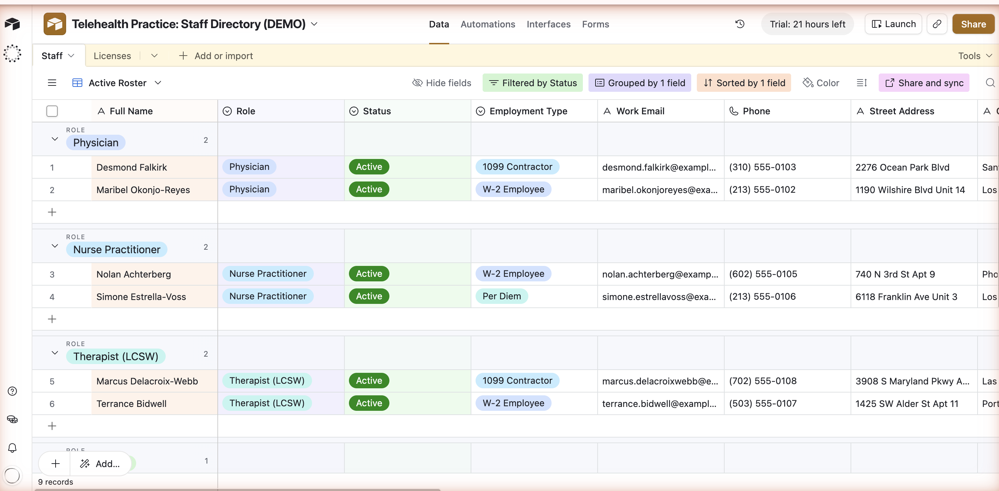
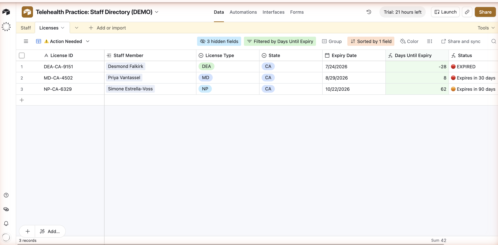
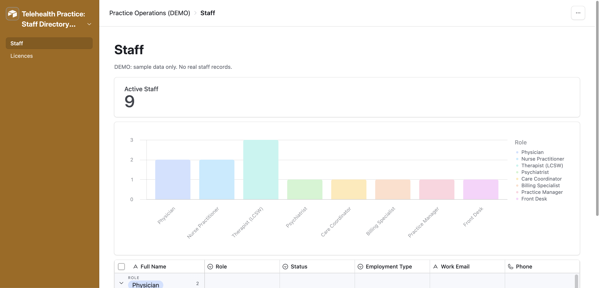
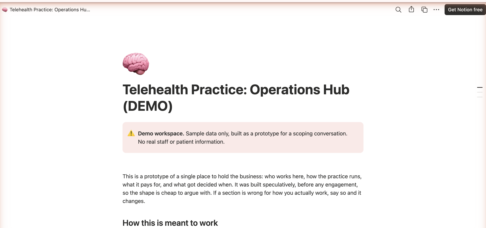
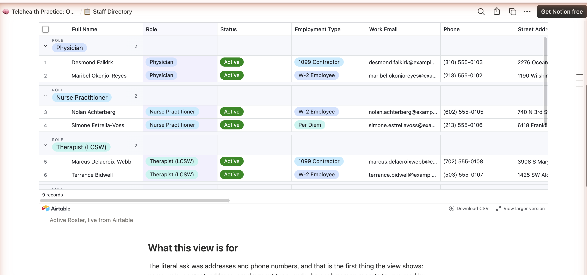
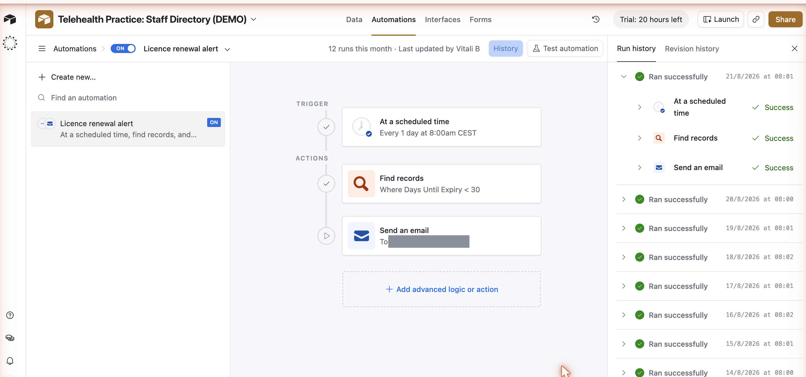
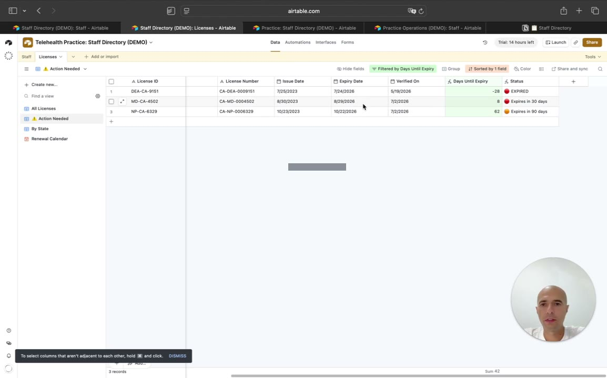

The brief was "a database for my staff, address and phone number." That reading gives you one table of contact details, and it takes about fifteen minutes.
But in US telemedicine a clinician may only treat a patient physically located in a state where that clinician holds a licence. So the staff database is not an address book. It is the thing that answers which clinicians can legally see a patient in Nevada next Tuesday, and whose licence is about to lapse. A lapsed licence is a compliance problem, not an admin annoyance.
That is the reason this case exists. The contact details were built exactly as asked. The licensure model was built next to them, and the practice was invited to say it was too much.
Context
Company: US telemedicine practice - remote behavioural health, small clinical team
Systems: None in place. Staff details lived across documents and inboxes
The ask: An Airtable database for staff (address, phone, etc.), plus a Notion hub to hold business information in one place
Scope: Self-built demo with generated names for privacy. No real staff records at any point
Core problem: Nothing held who works here, what they are licensed to do, and where that licence is valid
Problem
| Issue | Detail |
|---|---|
| No central provider database | Staff details were not held in any one system. Stated directly on the call: "we don't have a central database for providers" |
| No operations hub | "that central hub for operations. We don't have one" |
| Licence visibility | Nothing surfaced which clinician was licensed in which state, or when a licence expired |
| Manual routine work | Staff were manually emailing patients and referrers for routine steps |
For a telemedicine practice the third row is the expensive one. Without it, a lapsed licence is found when somebody happens to look, and the cost of not looking is a clinician seeing a patient they are not licensed to see.
Solution
An Airtable base modelling staff and licences as separate linked tables, with expiry calculated rather than remembered.
STAFF ─┬─ name, role, status, employment type, contact, address
│
└─< LICENCES one staff member, many licences
├─ type MD · DO · NP · RN · LCSW · PsyD · DEA · CPR/BLS
├─ state CA · NV · AZ · OR · WA
├─ issue date, expiry date
├─ Days Until Expiry
│ DATETIME_DIFF({Expiry Date}, TODAY(), 'days')
└─ Status
expired / 30 days / 90 days / valid / no expiry
│
├──▶ VIEW "Action Needed"
│ Days Until Expiry < 90, sorted ascending
│
└──▶ AUTOMATION daily 08:00
find records < 30 days → send email- Two linked tables, so one clinician can hold licences in several states without duplicating the person
- Status is derived, not typed. Nobody has to remember to mark a licence expired
- A fourth branch for no expiry on file, because real data always has gaps and a system should show the hole rather than hide it
- Nine views, of which the one that matters is licences expiring within 90 days
- A two page interface with counters, so it reads as an application rather than a spreadsheet
- A Notion hub with SOP, policy and vendor structure, embedding the roster live
The literal ask, delivered: name, role, contact, address, employment type and manager, grouped by role.

The view the design decision produced. One licence lapsed 28 days ago, one due in 8 days, one in 62.

Build notes
The alert has to be time triggered, not record triggered. This is the detail that separates a working build from a mockup. Days Until Expiry derives from TODAY(), so it changes by the clock rather than by a record edit. Airtable's "when record matches conditions" trigger would never fire, because nothing about the record changes on the day it crosses the threshold. The automation runs on a scheduled daily trigger instead.
Use TODAY(), not NOW(). NOW() carries a time component, which produces fractional day noise and a field that recalculates constantly.
The data was seeded deliberately so every branch had something to show: one licence already expired, one at roughly 21 days, one at roughly 75, one clinician holding three state licences, and one with no expiry recorded at all.
Twelve days later, nobody had touched it. Those same three rows now read 28 days expired, 8 days and 62 days. The drift is the formula doing its job, and it is the clearest evidence the system is live rather than a screenshot.
Counter and grid use different thresholds on purpose. The interface reads "Licences needing action: 2" above a grid of three rows. The counter is scoped to 30 days, the grid to 90.

One record, two systems
Staff records live in Airtable once. The Notion hub embeds the live view rather than keeping a second copy that quietly goes stale. Change a phone number in Airtable and it is changed in the hub.


Results
A lapsed licence stops being something found by chance and becomes something reported every morning. In telemedicine that is a compliance exposure rather than an admin one: a clinician may only treat a patient in a state where their licence is current, so the cost of not noticing is a treatment that should not have happened.
- Nine consecutive successful daily runs at 08:00, each one finding records and sending the renewal email
- Every status branch exercised by the sample data, including the no expiry case
- Expiry surfaced automatically rather than discovered. Three licences currently inside the 90 day window, ranked by urgency, with no human check involved

Tech stack
- Airtable - linked tables, formula fields, nine views, Interface Designer, scheduled automation
- Notion - operations hub, SOP and policy structure, live Airtable embed
What works
The obvious way a renewal tracker fails is that it becomes another dashboard nobody opens. Three things prevent that here:
- The alert comes to you. A daily email for anything inside 30 days, rather than a view somebody has to remember to check.
- The time trigger is correct. A condition based trigger looks fine in the editor and silently never fires. This one has fired every morning for nine days.
- Missing data is visible. A licence with no expiry on file shows as its own status rather than quietly counting as valid, which is how this kind of system usually lies to you.
Beyond that: status is derived so it cannot go stale, the roster lives in one system rather than being copied into two, and the interface gives a non technical owner a readable front door.
Walkthrough
Four minutes through the live base: the roster, the licence view, the automation and its run history, the interface, and the Notion hub with the roster embedded.

Known gaps
- Sample data only. Deliberate. Staff records in a healthcare organisation are personal data, so nothing real was ever entered.
- No self service form, where providers enter their own details and upload licence copies. That turned out to be the practice's top priority, and it surfaced during the demo, which is rather the point of showing something real early.
- Airtable cannot do custom fonts or exact brand hex codes. Flagged in writing before any commitment.
- Licence data is trusted, not verified. The base records what someone types. It does not check a licence against a state board, and a renewal tracker is only as good as the dates entered.